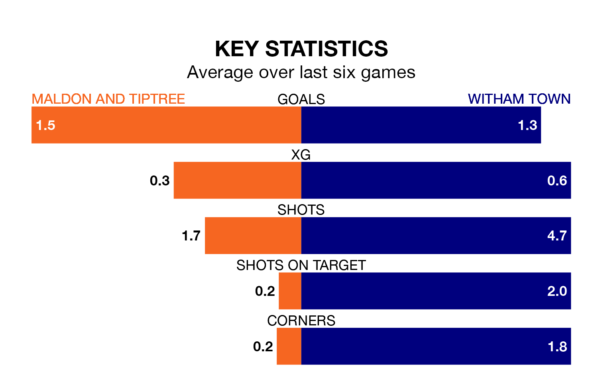

Maldon and Tiptree host Witham Town on Saturday at the Wallace Binder Stadium in the Isthmian League Division One North.
In their last league match, on February 3, Maldon & Tiptree beat Enfield 1893 1-0 away.
Witham lost, 4-0 away at Basildon United.
With 31 goals in 23 games so far this season, Witham are scoring at below the league average rate with 1.3 goals per game. And they are conceding more than average, letting in 43 goals at a rate of 1.9 per game.
Maldon & Tiptree, meanwhile, are above average scorers, with 2.0 goals per game, compared to a league average of 1.7. They have conceded 1.6 goals per game.
In the last 10 years, Maldon & Tiptree and Witham have played each other on six occasions. Maldon & Tiptree won two of them and Witham four.
On average, the Jammers scored 1.5 goals and Witham 1.7 in those matches.
Their last meeting was on December 8, when Witham won 3-2 at home.
The Jammers are in reasonable form in the Isthmian League Division One North, with four wins and two losses from their last six games.
With two wins and four losses over that period, Town's form is much worse – they have taken six points from 18, compared to the home team's 12.
The visitors are 14th in the table after 23 games, of which they have won six and drawn six, earning 24 points.
Maldon & Tiptree are six places ahead of Witham in eighth, with 12 wins and three draws putting them on 39 points.
Updated: 07:59 (UTC), 26/04/24